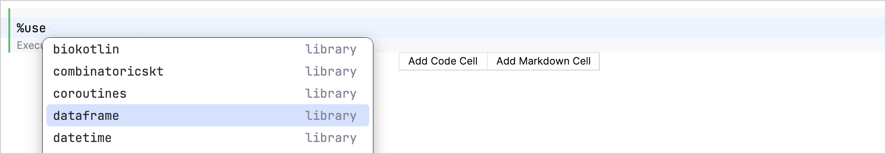
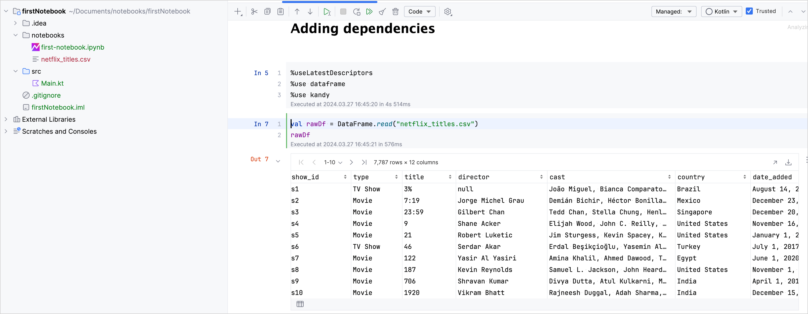
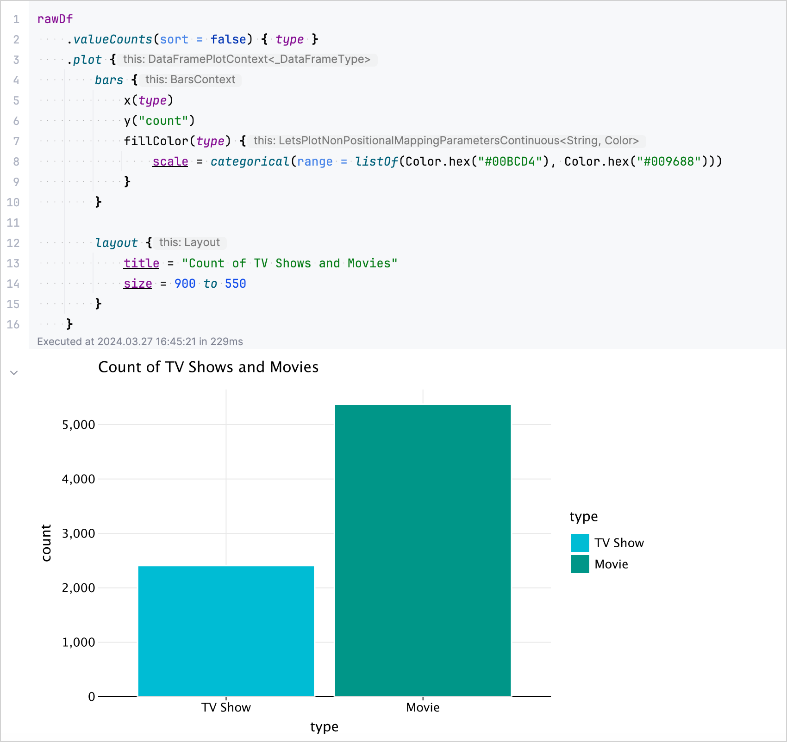

You've already created your first Kotlin Notebook! Now let's learn how to add dependencies to libraries, which is necessary to unlock advanced features.
You can load any library from the Maven repository by specifying its coordinates using Gradle-style syntax in any code cell. However, Kotlin Notebook has a simplified method to load popular libraries in the form of the %use statement:
// Replace libraryName with the library dependency you want to add
%use libraryName
You can also use the autocompletion feature in Kotlin Notebook to quickly access available libraries:

Add Kotlin DataFrame and Kandy libraries to your Kotlin Notebook
Let's add two popular Kotlin library dependencies to your Kotlin Notebook:
// Ensures that the latest available library versions are used
%useLatestDescriptors
// Imports the Kotlin DataFrame library
%use dataframe
// Imports the Kotlin Kandy library
%use kandy
Run the code cell.
When a %use statement is executed, it downloads the library dependencies and adds the default imports to your notebook.
To import data from a CSV file using the Kotlin DataFrame library, use the .read() function in a new code cell:
// Creates a DataFrame by importing data from the "netflix_titles.csv" file.
val rawDf = DataFrame.read("netflix_titles.csv")
// Displays the raw DataFrame data
rawDf

In a new code cell, use the .plot method to visually represent the distribution of TV shows and Movies in your DataFrame.:
rawDf
// Counts the occurrences of each unique value in the column named "type"
.valueCounts(sort = false) { type }
// Visualizes data in a bar chart specifying the colors
.plot {
bars {
x(type)
y("count")
fillColor(type) {
scale = categorical(range = listOf(Color.hex("#00BCD4"), Color.hex("#009688")))
}
}
// Configures the layout of the chart and sets the title
layout {
title = "Count of TV Shows and Movies"
size = 900 to 550
}
}
The resulting chart:

Congratulations on adding and utilizing these libraries in your Kotlin Notebook! This is just a glimpse into what you can achieve with Kotlin Notebook and its supported libraries.